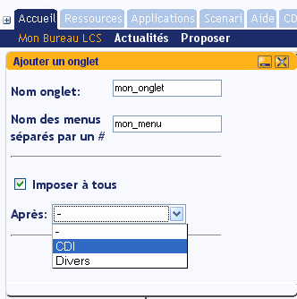

Documentation LCS monlcs
PREREQUIS:
Lisez d'abord l'introduction
Lisez ensuite les possibilités offertes à l'élève
Lisez ensuite les possibilités offertes au professeur
Un
maximum d'information se trouve dans les liens pré-cités.
Nous tentons ici d'isoler les informations qui intéresseront le
gestionnaire MonLCS (droit monlcs_is_admin) au premier chef.
3° Le
profil gestionnaire monlcs_is_admin.
a) Quel est son rôle ?
Définir les écrans par défaut.
Adapter le MonLCS de son établissement.
Conseiller, animer, assister accompagner.
Veillez au respect de bonnes pratiques de MonLCS.
MonLCS est un espace d'échange. Si les utilisateurs jouissent
d'une grande liberté il faut quand même veiller à
la cohérence du portail.
Les points à surveiller sont:
- la bonne
utilisation des onglets par défaut.
- la bonne
compréhension de la philosophie générale
d'utilisation de MonLCS.
- une
surveillance discrète des contenus.
b) La gestion des onglets
établissement. (création - adaptation - suppression)
Par
le truchement des onglets etablissements, une certaine souplesse est
donnée aux établissements de créer des onglets
pour le CDI par exemple ou pour proposer un espace de jeux.
Dans ce cas l'onglet sera visible par tous les
utilisateurs de MonLCS.
Ajouter un menu établissement:

Un onglet établissement se
crée de la même manière qu'un onglet personnel sauf
que monlcs_is_admin est propriètaire de cet onglet. Toute
modification de la structure de cet onglet doit donc être
réalisé par monlcs_is_admin. Si monlcs_is_admin ne coche
pas imposer à tous il crée alors un onglet personnel pour
son propre compte.
MonLCS est installé par
défaut avec deux onglets établissement: CDI et Divers
(pour les jeux). Les établissements allergiques aux jeux peuvent
donc choisir de suprimmer cet onglet.
Les CDI étant divers et
variés chaque établissement pourra ainsi personnaliser
cet onglet.
Pour la gestion des sous-menus se reporter au lien profil professeur.
c) La gestion des ressources par défaut.
Très facile: Déposer les ressources
sur le bureau
Puis clic droit - Proposer par défaut.
Rappel : un utilisateur doit vider son bureau et l'enregistrer
pour récupérer les ressources par défaut.